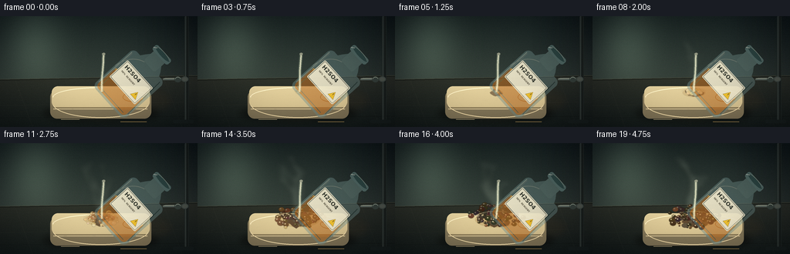
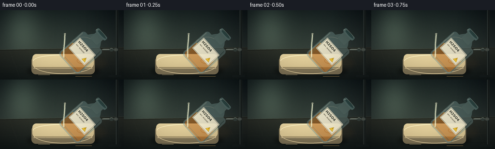

CODING AGENTS AS PIXEL WORLD MODELS
traex/DeepSeek-V4.1-Flash · material_0042
点击播放 · 原生 RGB 像素
此结果可播放，但该运行尚未通过最终提交审核。页面展示不代表评测通过。
逐轮保存的候选
回放视频、检查图与代码变化。
每份候选均可单独播放。实际图片检查记录在下方工具轨迹中。
候选 01播放与检查图
点击播放 · 原生 RGB 像素


展开代码变化
--- 上一保存版本
+++ 本次保存版本
@@ -0,0 +1,516 @@
+"""Procedural RGB video for the sulfuric-acid-on-soap prompt."""
+
+from __future__ import annotations
+
+import math
+from pathlib import Path
+
+import numpy as np
+from PIL import Image, ImageDraw, ImageFilter, ImageFont
+
+import artifact_io
+
+
+CASE_DIR = Path(__file__).resolve().parent
+W, H, N, FPS = 256, 144, 20, 4
+S = 4
+WP, HP = W * S, H * S
+
+INK = (18, 24, 25)
+IVORY = np.array((232, 218, 179), dtype=np.float32)
+AMBER = np.array((184, 111, 39), dtype=np.float32)
+CARAMEL = np.array((111, 63, 31), dtype=np.float32)
+CHAR = np.array((43, 30, 24), dtype=np.float32)
+GLASS = np.array((111, 145, 145), dtype=np.float32)
+
+
+def sc(value: float) -> int:
+ return int(round(value * S))
+
+
+def box(values):
+ return tuple(sc(v) for v in values)
+
+
+def rgba(color, alpha=255):
+ if len(color) == 4:
+ return color
+ return (*color, int(alpha))
+
+
+def blend(a, b, amount):
+ amount = max(0.0, min(1.0, float(amount)))
+ return tuple(int(round(x * (1.0 - amount) + y * amount)) for x, y in zip(a, b))
+
+
+def smoothstep(value):
+ value = max(0.0, min(1.0, value))
+ return value * value * (3.0 - 2.0 * value)
+
+
+def vertical_gradient(top, bottom, width=WP, height=HP):
+ rows = np.linspace(0.0, 1.0, height, dtype=np.float32)[:, None]
+ top_arr = np.array(top, dtype=np.float32)
+ bottom_arr = np.array(bottom, dtype=np.float32)
+ arr = top_arr[None, :] * (1.0 - rows) + bottom_arr[None, :] * rows
+ arr = np.repeat(arr[:, None, :], width, axis=1)
+ return Image.fromarray(np.clip(arr, 0, 255).astype(np.uint8), "RGB")
+
+
+def gradient_mask(mask, top, bottom):
+ mask = mask.convert("L")
+ height = mask.height
+ rows = np.linspace(0.0, 1.0, height, dtype=np.float32)[:, None]
+ top_arr = np.array(top, dtype=np.float32)
+ bottom_arr = np.array(bottom, dtype=np.float32)
+ arr = top_arr[None, :] * (1.0 - rows) + bottom_arr[None, :] * rows
+ arr = np.repeat(arr[:, None, :], mask.width, axis=1)
+ rgb = Image.fromarray(np.clip(arr, 0, 255).astype(np.uint8), "RGB")
+ rgb.putalpha(mask)
+ return rgb
+
+
+def text_font(size, bold=False):
+ name = "DejaVuSans-Bold.ttf" if bold else "DejaVuSans.ttf"
+ path = Path("/usr/share/fonts/truetype/dejavu") / name
+ return ImageFont.truetype(str(path), max(5, int(size * S)))
+
+
+def add_texture(image, rng, strength=5.0):
+ arr = np.asarray(image.convert("RGB"), dtype=np.float32)
+ noise = rng.normal(0.0, strength, arr.shape[:2]).astype(np.float32)
+ arr += noise[:, :, None]
+ return Image.fromarray(np.clip(arr, 0, 255).astype(np.uint8), "RGB")
+
+
+def draw_background(rng):
+ wall = vertical_gradient((18, 28, 31), (59, 70, 66))
+ wall_arr = np.asarray(wall, dtype=np.float32)
+ yy, xx = np.mgrid[0:HP, 0:WP].astype(np.float32)
+ xx /= S
+ yy /= S
+
+ # A cool, soft window reflection gives the glass and soap distinct edges.
+ glow = np.exp(-(((xx - 44.0) / 37.0) ** 2 + ((yy - 38.0) / 54.0) ** 2))
+ wall_arr += glow[:, :, None] * np.array((30.0, 36.0, 30.0), dtype=np.float32)
+ side_shade = np.clip((xx - 178.0) / 95.0, 0.0, 1.0)
+ wall_arr -= side_shade[:, :, None] * np.array((8.0, 11.0, 10.0), dtype=np.float32)
+ wall = Image.fromarray(np.clip(wall_arr, 0, 255).astype(np.uint8), "RGB")
+ draw = ImageDraw.Draw(wall, "RGBA")
+
+ # Bench top and its long perspective edge.
+ table = vertical_gradient((62, 61, 52), (16, 23, 24), height=HP)
+ table_mask = Image.new("L", (WP, HP), 0)
+ tm = ImageDraw.Draw(table_mask)
+ tm.polygon(
+ [(0, sc(82)), (WP, sc(77)), (WP, HP), (0, HP)],
+ fill=255,
+ )
+ wall.paste(table, (0, 0), table_mask)
+ draw = ImageDraw.Draw(wall, "RGBA")
+ draw.line([(0, sc(82)), (WP, sc(77))], fill=(182, 164, 121, 40), width=sc(0.7))
+ draw.line([(0, sc(83)), (WP, sc(78))], fill=(5, 10, 11, 155), width=sc(1.0))
+
+ # Faint bench seams and reflected light establish scale.
+ draw.line([(0, sc(116)), (WP, sc(111))], fill=(218, 198, 150, 13), width=sc(0.5))
+ draw.line([(0, sc(132)), (WP, sc(130))], fill=(0, 0, 0, 50), width=sc(0.7))
+ draw.line([(sc(20), sc(84)), (sc(42), HP)], fill=(224, 207, 163, 9), width=sc(0.45))
+ draw.line([(sc(211), sc(78)), (sc(236), HP)], fill=(224, 207, 163, 8), width=sc(0.45))
+
+ # Diffuse countertop glints, deliberately soft so they never compete with foam.
+ reflection = Image.new("RGBA", (WP, HP), (0, 0, 0, 0))
+ rd = ImageDraw.Draw(reflection)
+ rd.ellipse(box((66, 104, 195, 132)), fill=(196, 155, 95, 18))
+ rd.ellipse(box((90, 113, 169, 137)), fill=(225, 192, 133, 13))
+ rd.ellipse(box((141, 92, 225, 128)), fill=(149, 84, 28, 15))
+ reflection = reflection.filter(ImageFilter.GaussianBlur(sc(5.0)))
+ wall = Image.alpha_composite(wall.convert("RGBA"), reflection).convert("RGB")
+
+ # Sparse bench grain rather than a uniform digital noise field.
+ grain = Image.new("RGBA", (WP, HP), (0, 0, 0, 0))
+ gd = ImageDraw.Draw(grain)
+ for _ in range(150):
+ x = rng.uniform(0, W)
+ y = rng.uniform(85, 143)
+ length = rng.uniform(0.4, 2.6)
+ alpha = int(rng.uniform(4, 18))
+ gd.line(
+ [(sc(x), sc(y)), (sc(x + length), sc(y + rng.uniform(-0.2, 0.2)))],
+ fill=(227, 211, 172, alpha),
+ width=1,
+ )
+ wall = Image.alpha_composite(wall.convert("RGBA"), grain).convert("RGB")
+ return add_texture(wall, rng, 2.2)
+
+
+def draw_stand(image):
+ layer = Image.new("RGBA", (WP, HP), (0, 0, 0, 0))
+ d = ImageDraw.Draw(layer, "RGBA")
+
+ # Dark retort stand behind the bottle.
+ d.rounded_rectangle(box((239, 0, 244.5, 137)), radius=sc(1.5), fill=(28, 35, 35, 245))
+ d.line([(sc(240.2), 0), (sc(240.2), sc(137))], fill=(136, 151, 145, 80), width=sc(0.7))
+ d.line([(sc(243.1), 0), (sc(243.1), sc(137))], fill=(0, 0, 0, 150), width=sc(0.7))
+ d.rounded_rectangle(box((224, 134.5, 251, 139)), radius=sc(2), fill=(20, 27, 28, 255))
+ d.line([(sc(214), sc(81.5)), (sc(240), sc(81.5))], fill=(45, 54, 53, 245), width=sc(3.2))
+ d.line([(sc(214), sc(80.2)), (sc(240), sc(80.2))], fill=(144, 155, 144, 85), width=sc(0.7))
+ d.ellipse(box((235, 78.3, 244, 85.2)), fill=(58, 67, 65, 245))
+ d.ellipse(box((236.2, 79.4, 242.8, 84.1)), fill=(113, 124, 118, 115))
+ image.alpha_composite(layer)
+
+
+def draw_smoke(t, rng, underlay):
+ layer = Image.new("RGBA", (WP, HP), (0, 0, 0, 0))
+ d = ImageDraw.Draw(layer, "RGBA")
+ amount = smoothstep((t - 0.10) / 0.78)
+ if amount <= 0:
+ return underlay
+
+ for index in range(7):
+ phase = rng.uniform(0, math.tau)
+ start_x = 129.5 + rng.uniform(-5.0, 6.0)
+ start_y = 96.0 - rng.uniform(0.0, 4.0)
+ top_y = rng.uniform(18.0, 60.0)
+ bend = rng.uniform(-18.0, 15.0)
+ life = 0.30 + index * 0.075
+ local = max(0.0, min(1.0, (amount - life * 0.35) / (1.0 - life * 0.35)))
+ if local <= 0:
+ continue
+ width = sc(rng.uniform(2.1, 5.2) * (0.55 + 0.65 * local))
+ color = (172, 185, 168, int(20 + 28 * local))
+ points = []
+ for step in range(13):
+ u = step / 12.0
+ y = start_y * (1.0 - u) + top_y * u
+ sway = math.sin(u * 4.7 + phase + t * 4.0) * (2.5 + 5.0 * u)
+ x = start_x + bend * u * u + sway + 2.0 * math.sin(t * 8.0 + index)
+ points.append((sc(x), sc(y)))
+ d.line(points, fill=color, width=width, joint="curve")
+ if local > 0.45:
+ top = points[-1]
+ radius = sc(3.2 + 5.0 * local)
+ d.ellipse(
+ (top[0] - radius, top[1] - radius // 2, top[0] + radius, top[1] + radius // 2),
+ fill=(177, 188, 173, int(9 + 10 * local)),
+ )
+
+ layer = layer.filter(ImageFilter.GaussianBlur(sc(3.2)))
+ underlay.alpha_composite(layer)
+ return underlay
+
+
+def draw_soap(image, rng):
+ # Cast shadow anchors the bar to the bench.
+ shadow = Image.new("RGBA", (WP, HP), (0, 0, 0, 0))
+ sd = ImageDraw.Draw(shadow)
+ sd.ellipse(box((55, 113, 206, 139)), fill=(0, 0, 0, 122))
+ sd.ellipse(box((69, 116, 193, 137)), fill=(0, 0, 0, 82))
+ shadow = shadow.filter(ImageFilter.GaussianBlur(sc(4.0)))
+ image.alpha_composite(shadow)
+
+ body_mask = Image.new("L", (WP, HP), 0)
+ bm = ImageDraw.Draw(body_mask)
+ bm.rounded_rectangle(box((65, 96, 196, 133)), radius=sc(9.0), fill=255)
+ body = gradient_mask(body_mask, (181, 163, 120), (111, 101, 79))
+ image.alpha_composite(body)
+
+ top_mask = Image.new("L", (WP, HP), 0)
+ tm = ImageDraw.Draw(top_mask)
+ tm.rounded_rectangle(box((67, 91, 194, 119)), radius=sc(8.0), fill=255)
+ top = gradient_mask(top_mask, (242, 229, 187), (203, 184, 137))
+ image.alpha_composite(top)
+
+ d = ImageDraw.Draw(image, "RGBA")
+ # Top bevel and softened front lip.
+ d.arc(box((68.2, 92.2, 192.8, 118.2)), 180, 360, fill=(255, 244, 207, 160), width=sc(1.0))
+ d.line([(sc(72), sc(118.4)), (sc(189), sc(118.4))], fill=(116, 100, 70, 75), width=sc(0.7))
+ d.arc(box((68.0, 94.0, 193.0, 132.0)), 8, 172, fill=(238, 218, 171, 90), width=sc(0.9))
+ d.line([(sc(69), sc(120.5)), (sc(191), sc(120.5))], fill=(249, 226, 176, 42), width=sc(0.7))
+
+ # Gentle worn soap texture.
+ texture = Image.new("RGBA", (WP, HP), (0, 0, 0, 0))
+ td = ImageDraw.Draw(texture)
+ for _ in range(100):
+ x = rng.uniform(72, 189)
+ y = rng.uniform(95, 129)
+ length = rng.uniform(0.5, 4.2)
+ td.line(
+ [(sc(x), sc(y)), (sc(x + length), sc(y + rng.uniform(-0.6, 0.6)))],
+ fill=(255, 246, 211, int(rng.uniform(6, 20))),
+ width=1,
+ )
+ texture = texture.filter(ImageFilter.GaussianBlur(sc(0.22)))
+ image.alpha_composite(texture)
+
+ # A small embossed oval keeps the object legible as a bar of soap.
+ d = ImageDraw.Draw(image, "RGBA")
+ d.ellipse(box((159, 99, 184, 111)), outline=(163, 143, 100, 52), width=sc(0.8))
+ d.text((sc(164.4), sc(101.2)), "SOAP", font=text_font(4.5, True), fill=(157, 137, 96, 105))
+
+
+def bubble_color(age, rng):
+ if age < 0.35:
+ base = IVORY * (1.0 - age / 0.35) + np.array((211, 167, 93)) * (age / 0.35)
+ elif age < 0.72:
+ u = (age - 0.35) / 0.37
+ base = np.array((211, 167, 93)) * (1.0 - u) + CARAMEL * u
+ else:
+ u = (age - 0.72) / 0.28
+ base = CARAMEL * (1.0 - u) + CHAR * u
+ base = base + rng.uniform(-12, 12, 3)
+ return tuple(int(v) for v in np.clip(base, 0, 255))
+
+
+def irregular_patch(center, rx, ry, rng, points=16, rough=0.22):
+ cx, cy = center
+ result = []
+ for index in range(points):
+ angle = math.tau * index / points
+ radius = 1.0 + rng.uniform(-rough, rough)
+ result.append((sc(cx + math.cos(angle) * rx * radius), sc(cy + math.sin(angle) * ry * radius)))
+ return result
+
+
+def draw_reaction(image, t, rng):
+ growth = smoothstep((t - 0.015) / 0.82)
+ if growth <= 0:
+ return
+ contact = (131.5, 99.0)
+ spread_x = 3.0 + 30.0 * growth
+ spread_y = 2.0 + 10.0 * growth
+
+ layer = Image.new("RGBA", (WP, HP), (0, 0, 0, 0))
+ d = ImageDraw.Draw(layer, "RGBA")
+
+ # Acid-wet halo and a translucent amber puddle at the contact point.
+ d.ellipse(
+ box((contact[0] - spread_x * 0.84, contact[1] - spread_y * 0.80,
+ contact[0] + spread_x * 0.84, contact[1] + spread_y * 0.86)),
+ fill=(136, 91, 35, int(26 + 34 * growth)),
+ )
+ d.ellipse(
+ box((contact[0] - spread_x * 0.45, contact[1] - spread_y * 0.38,
+ contact[0] + spread_x * 0.48, contact[1] + spread_y * 0.45)),
+ fill=(213, 165, 83, int(62 + 32 * growth)),
+ )
+ d.ellipse(
+ box((contact[0] - 3.0, contact[1] - 1.1, contact[0] + 3.4, contact[1] + 1.3)),
+ fill=(244, 219, 151, int(115 + 45 * growth)),
+ )
+
+ # Carbonized crust first, then foam above it.
+ if growth > 0.20:
+ carbon = irregular_patch(contact, 4.5 + 12.5 * growth, 3.0 + 7.2 * growth, rng, 18, 0.28)
+ d.polygon(carbon, fill=(66, 43, 27, int(130 + 90 * growth)))
+ for _ in range(6):
+ angle = rng.uniform(0, math.tau)
+ distance = rng.uniform(0.0, 0.75)
+ cx = contact[0] + math.cos(angle) * spread_x * distance
+ cy = contact[1] + math.sin(angle) * spread_y * distance
+ r = rng.uniform(1.4, 3.8) * (0.55 + growth)
+ d.ellipse(box((cx - r, cy - r * 0.7, cx + r, cy + r * 0.7)),
+ fill=(35, 24, 20, int(80 + 100 * growth)))
+
+ bubbles = []
+ for index in range(92):
+ angle = rng.uniform(0, math.tau)
+ radial = math.sqrt(rng.uniform(0.0, 1.0))
+ threshold = 0.05 + radial * 0.82 + rng.uniform(-0.045, 0.045)
+ if growth <= threshold:
+ continue
+ bx = contact[0] + math.cos(angle) * spread_x * radial * rng.uniform(0.90, 1.08)
+ by = contact[1] + math.sin(angle) * spread_y * radial * rng.uniform(0.88, 1.08)
+ # Bubbles stack upward as the reaction accelerates.
+ lift = max(0.0, (growth - threshold) / max(0.08, 1.0 - threshold))
+ by -= rng.uniform(0.0, 8.5) * lift
+ radius = rng.uniform(0.85, 3.5) * (0.78 + 0.45 * growth)
+ pulse = 1.0 + 0.10 * math.sin(t * 20.0 + index * 1.73)
+ bubbles.append((index, bx, by, radius * pulse, threshold))
+
+ bubbles.sort(key=lambda item: item[2])
+ for index, bx, by, radius, threshold in bubbles:
+ age = max(0.0, min(1.0, (growth - threshold) / max(0.18, 1.0 - threshold)))
+ fill = bubble_color(age, rng)
+ edge = tuple(max(0, int(c * 0.62)) for c in fill)
+ d.ellipse(
+ box((bx - radius, by - radius * 0.80, bx + radius, by + radius * 0.80)),
+ fill=(*fill, int(150 + 92 * age)),
+ outline=(*edge, int(105 + 90 * age)),
+ width=max(1, sc(0.28)),
+ )
+ if radius > 1.25:
+ highlight_x = bx - radius * 0.34
+ highlight_y = by - radius * 0.28
+ hr = max(0.25, radius * 0.20)
+ d.ellipse(
+ box((highlight_x - hr, highlight_y - hr * 0.65,
+ highlight_x + hr, highlight_y + hr * 0.65)),
+ fill=(255, 243, 205, int(55 + 105 * (1.0 - age))),
+ )
+
+ # Wet rim and escaping flecks.
+ if growth > 0.25:
+ d.arc(
+ box((contact[0] - spread_x * 0.94, contact[1] - spread_y * 0.90,
+ contact[0] + spread_x * 0.94, contact[1] + spread_y * 0.95)),
+ 196, 344,
+ fill=(255, 224, 158, int(35 + 42 * growth)),
+ width=sc(0.55),
+ )
+ for index in range(10):
+ local_t = (t + index * 0.037) % 1.0
+ if local_t > 0.45:
+ continue
+ angle = rng.uniform(-math.pi, 0)
+ distance = rng.uniform(5.0, 14.0) * (0.3 + growth)
+ px = contact[0] + math.cos(angle) * distance
+ py = contact[1] + math.sin(angle) * distance - rng.uniform(0, 6) * growth
+ r = rng.uniform(0.25, 0.75)
+ d.ellipse(box((px - r, py - r, px + r, py + r)), fill=(228, 185, 105, 110))
+
+ layer = layer.filter(ImageFilter.GaussianBlur(sc(0.16)))
+ image.alpha_composite(layer)
+
+
+def build_bottle():
+ layer = Image.new("RGBA", (sc(140), sc(140)), (0, 0, 0, 0))
+ d = ImageDraw.Draw(layer, "RGBA")
+
+ # Glass silhouette: heavy body, shoulder, short pouring neck, and lip.
+ body = box((41, 42, 101, 114))
+ d.rounded_rectangle(body, radius=sc(7.0), fill=(104, 136, 137, 104))
+ d.polygon(
+ [(sc(48), sc(51)), (sc(57), sc(36)), (sc(64), sc(26)), (sc(78), sc(26)),
+ (sc(87), sc(37)), (sc(95), sc(51))],
+ fill=(107, 139, 139, 100),
+ )
+ d.rounded_rectangle(box((61, 18, 82, 43)), radius=sc(3.2), fill=(112, 143, 142, 112))
+ d.rounded_rectangle(box((57, 16, 86, 25)), radius=sc(3.0), fill=(81, 109, 109, 192))
+ d.ellipse(box((58.5, 16.0, 84.5, 22.2)), fill=(38, 62, 63, 222))
+ d.arc(box((59.0, 16.1, 84.0, 22.1)), 182, 356, fill=(201, 220, 204, 112), width=sc(0.7))
+
+ # Amber liquid volume and meniscus.
+ d.rounded_rectangle(box((44, 76, 98, 111)), radius=sc(5.5), fill=(175, 103, 34, 150))
+ d.ellipse(box((44, 73, 98, 82)), fill=(203, 134, 47, 162))
+ d.arc(box((45, 73.5, 97, 81.5)), 182, 356, fill=(246, 201, 107, 170), width=sc(0.75))
+ d.line([(sc(48), sc(80)), (sc(48), sc(108))], fill=(250, 195, 94, 80), width=sc(0.9))
+
+ # Label, hazard diamond, and glass edge treatment.
+ d.rounded_rectangle(box((47, 58, 96, 90)), radius=sc(1.6), fill=(231, 226, 204, 232))
+ d.rounded_rectangle(box((48.0, 59.0, 95.0, 89.0)), radius=sc(1.2), outline=(83, 85, 76, 155), width=sc(0.45))
+ d.text((sc(51), sc(61)), "H2SO4", font=text_font(7.3, True), fill=(45, 49, 44, 255))
+ d.text((sc(52), sc(71.2)), "98% REAGENT", font=text_font(3.2, True), fill=(83, 77, 64, 225))
+ d.polygon(
+ [(sc(87), sc(76)), (sc(92), sc(85)), (sc(82), sc(85))],
+ fill=(233, 188, 42, 238),
+ outline=(88, 67, 24, 210),
+ )
+ d.text((sc(86.2), sc(78.0)), "!", font=text_font(3.8, True), fill=(57, 42, 24, 255))
+ d.line([(sc(43.0), sc(47)), (sc(43.0), sc(105))], fill=(213, 233, 218, 100), width=sc(1.0))
+ d.line([(sc(44.4), sc(48)), (sc(44.4), sc(100))], fill=(244, 250, 230, 72), width=sc(0.45))
+ d.line([(sc(96.0), sc(46)), (sc(99.0), sc(105))], fill=(35, 62, 65, 115), width=sc(1.0))
+ d.line([(sc(47), sc(108)), (sc(94), sc(108))], fill=(43, 56, 54, 120), width=sc(0.75))
+
+ # Rim highlights emphasize the direction of the pour.
+ d.arc(box((41, 42, 101, 114)), 185, 255, fill=(226, 241, 226, 80), width=sc(0.9))
+ d.line([(sc(57), sc(22)), (sc(61), sc(19))], fill=(227, 242, 227, 150), width=sc(0.65))
+
+ rotated = layer.rotate(-48, resample=Image.Resampling.BICUBIC, center=(sc(70), sc(70)))
+ return rotated
+
+
+def paste_bottle(image, bottle):
+ # Rotated bottle center is (172,82); its lip lands near (134,47).
+ origin = (sc(172 - 70), sc(82 - 70))
+ image.alpha_composite(bottle, origin)
+
+ # Front clamp jaw and highlight sit over the glass body.
+ d = ImageDraw.Draw(image, "RGBA")
+ d.line([(sc(211), sc(82)), (sc(230), sc(82))], fill=(77, 88, 85, 230), width=sc(2.3))
+ d.line([(sc(212), sc(80.8)), (sc(229), sc(80.8))], fill=(180, 189, 171, 92), width=sc(0.55))
+ d.ellipse(box((226, 78.2, 235, 85.8)), fill=(47, 57, 55, 245))
+ d.arc(box((227, 79.1, 234, 84.9)), 190, 345, fill=(170, 180, 164, 105), width=sc(0.5))
+
+
+def draw_stream(image, t):
+ layer = Image.new("RGBA", (WP, HP), (0, 0, 0, 0))
+ d = ImageDraw.Draw(layer, "RGBA")
+ mouth = (134.0, 48.0)
+ end = (131.4 + 0.25 * math.sin(t * 7.0), 98.2)
+ points = []
+ for index in range(33):
+ u = index / 32.0
+ x = mouth[0] * (1.0 - u) + end[0] * u
+ y = mouth[1] * (1.0 - u) + end[1] * u
+ x += math.sin(u * 7.0 + t * 12.0) * (0.20 + 0.34 * u)
+ points.append((sc(x), sc(y)))
+
+ # Soft halo, dense core, and a moving white glint.
+ d.line(points, fill=(198, 217, 188, 48), width=sc(4.7), joint="curve")
+ d.line(points, fill=(230, 238, 204, 142), width=sc(2.5), joint="curve")
+ d.line(points, fill=(255, 253, 224, 210), width=sc(1.0), joint="curve")
+ for glint in range(4):
+ u = ((t * 0.75 + glint * 0.245) % 1.0)
+ if u < 0.08 or u > 0.98:
+ continue
+ idx = int(round(u * 32))
+ px, py = points[idx]
+ radius = sc(0.55)
+ d.ellipse((px - radius, py - radius, px + radius, py + radius), fill=(255, 255, 241, 220))
+
+ # A tiny bead at the lip and splash crown at impact.
+ d.ellipse(box((132.2, 47.3, 136.4, 50.4)), fill=(245, 244, 214, 122))
+ d.arc(box((127.4, 96.0, 135.4, 101.0)), 195, 345, fill=(245, 231, 178, 120), width=sc(0.55))
+ layer = layer.filter(ImageFilter.GaussianBlur(sc(0.22)))
+ image.alpha_composite(layer)
+
+
+def apply_grade(image, frame_index, rng):
+ arr = np.asarray(image.convert("RGB"), dtype=np.float32)
+ yy, xx = np.mgrid[0:HP, 0:WP].astype(np.float32)
+ x = xx / S
+ y = yy / S
+ light = np.exp(-(((x - 104.0) / 117.0) ** 2 + ((y - 58.0) / 88.0) ** 2))
+ arr += light[:, :, None] * np.array((12.0, 13.0, 8.0), dtype=np.float32)
+ vignette = np.clip(((x - 128.0) / 154.0) ** 2 + ((y - 72.0) / 102.0) ** 2, 0.0, 1.0)
+ arr *= (1.0 - 0.22 * vignette[:, :, None])
+ arr[:, :, 0] *= 1.015
+ arr[:, :, 2] *= 0.985
+ grain = rng.normal(0.0, 1.65, arr.shape[:2]).astype(np.float32)
+ arr += grain[:, :, None]
+ return Image.fromarray(np.clip(arr, 0, 255).astype(np.uint8), "RGB")
+
+
+def render_frame(frame_index, bottle, rng):
+ t = frame_index / max(1, N - 1)
+ image = draw_background(rng).convert("RGBA")
+ draw_stand(image)
+ image = draw_smoke(t, rng, image)
+ draw_soap(image, rng)
+ draw_reaction(image, t, rng)
+ paste_bottle(image, bottle)
+ draw_stream(image, t)
+
+ # A few crisp countertop reflections in the foreground.
+ d = ImageDraw.Draw(image, "RGBA")
+ d.line([(sc(79), sc(134)), (sc(103), sc(134))], fill=(224, 202, 155, 25), width=sc(0.55))
+ d.line([(sc(156), sc(137)), (sc(190), sc(137))], fill=(218, 176, 103, 22), width=sc(0.45))
+
+ graded = apply_grade(image.convert("RGB"), frame_index, rng)
+ return np.asarray(graded.resize((W, H), Image.Resampling.LANCZOS), dtype=np.uint8)
+
+
+def main():
+ bottle = build_bottle()
+ frames = []
+ for frame_index in range(N):
+ # Per-frame seed preserves fine texture while keeping composition stable.
+ rng = np.random.default_rng(3107 + frame_index * 101)
+ frames.append(render_frame(frame_index, bottle, rng))
+ frames = np.stack(frames, axis=0)
+ artifact_io.save(frames, CASE_DIR)
+ print(f"wrote {len(frames)} frames to {CASE_DIR}")
+
+
+if __name__ == "__main__":
+ main()
可观测工具轨迹
实际执行的命令与返回图片。
命令 1exit 0
/bin/bash -c "pwd && rg --files -g 'prompt.txt' -g 'GENERATION_RULES.md' -g 'task_spec.json' -g '"'!**/.git/**'"'"
命令 2exit 0
/bin/bash -c 'ls -la'
命令 3exit 0
/bin/bash -c 'cat prompt.txt'
命令 4exit 0
/bin/bash -c 'cat GENERATION_RULES.md'
命令 5exit 0
/bin/bash -c 'cat task_spec.json'
命令 6exit 0
/bin/bash -c "sed -n '1,240p' artifact_io.py"
命令 7exit 0
/bin/bash -c "command -v ffmpeg; command -v chafa; command -v viu; command -v python3; python3 -c 'import PIL, numpy; print(PIL.__version__, numpy.__version__)'"
命令 8exit 0
/bin/bash -c "fc-match 'DejaVu Sans' | head -1; fc-match 'Liberation Sans' | head -1; fc-match 'DejaVu Serif' | head -1"
命令 9exit 0
/bin/bash -c "python3 - <<'PY'
from PIL import Image, ImageDraw, ImageFont, ImageFilter
im=Image.new('RGB',(256,144),'white')
d=ImageDraw.Draw(im)
f=ImageFont.truetype('/usr/share/fonts/truetype/dejavu/DejaVuSans-Bold.ttf', 12)
d.text((4,4),'H2SO4',font=f,fill='black')
d.line((0,40,255,40),fill='red',width=1)
im.save('.tmp/font_test.png')
print(im.getpixel((10,10)), im.getpixel((10,30)))
PY"命令 10exit 0
/bin/bash -c 'command -v viu; command -v jp2; command -v img2txt; command -v viu; command -v timg; command -v python3'
命令 11exit 0
/bin/bash -c 'python3 generate.py'
保存候选 1 份；完成命令 11 次；可验证图片返回 0 张。原始 API 响应与完整日志保留在本地。